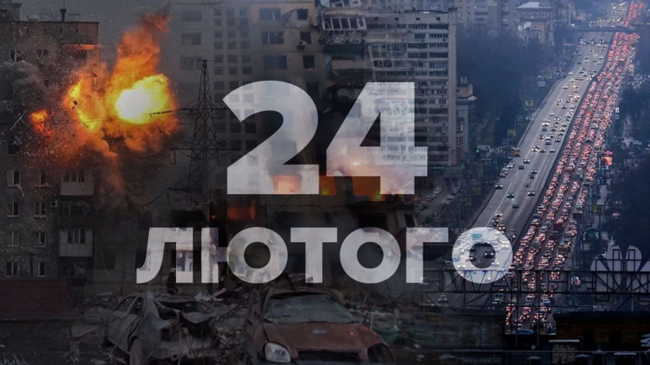

Початок
Підготовка росії до вторгнення в Україну у 2022 році розпочалася у березні 2021 року. Виникла міжнародна криза і поширилося занепокоєння щодо можливого вторгнення, оскільки росія почала нарощувати свої сили та військову техніку поблизу українського кордону. Супутникові знімки показали пересування бронетехніки, ракет та іншого важкого озброєння; до грудня біля кордону було розміщено понад 100 000 військовослужбовців. Криза є наслідком затяжної війни між росією та Україною, яка розпочалася у 2014 році. У грудні 2021 року Міністерство закордонних справ росії оголосило кілька вимог, серед яких заборона членства України в НАТО та скорочення чисельності сил НАТО у Східній Європі в обмін на виведення російських військ. США та інші члени НАТО відкинули ці вимоги і попередили росію, що посилять економічні санкції, якщо вона вторгнеться в Україну [39].
День повномасштабного вторгнення [290]
У лютому США, Великобританія, Канада, Естонія, Литва та Польща надали Україні зброю, зокрема зенітні та протитанкові ракетні комплекси, в рамках підготовки до російського вторгнення [40].
Президент Франції Еммануель Макрон і канцлер Німеччини Олаф Шольц намагалися запобігти війні в лютому 2022 року, але не змогли відмовити путіна від вторгнення у своїх переговорах. Уряд Джо Байдена висловлював занепокоєння щодо можливого російського нападу з 2021 року. Прем'єр-міністр Великої Британії Борис Джонсон попередив у лютому 2022 року, що росія готує найбільше вторгнення в Європу з 1945 року [41, 42, 43].
21 лютого 2022 року росія офіційно визнала дві самопроголошені квазідержави на сході України - Донецьку Народну Республіку та Луганську Народну Республіку. Так звані "республіки" були визнані в межах відповідних областей України, які простягаються далеко за лінію зіткнення. 22 лютого путін оголосив, що Мінські угоди більше не діють. Того ж дня рада федерації одноголосно схвалила застосування військової сили в цих регіонах; 22 лютого президент України Зеленський підписав указ про призов солдатів оперативного резерву в армію; 23 лютого він підписав указ про введення надзвичайного стану в окремих регіонах України, який того ж дня був схвалений Верховною Радою [44, 45, 46, 47, 48].
Початок вторгнення
24 лютого у своєму зверненні до народу путін оголосив про "спеціальну військову операцію", що фактично означало оголошення війни Україні. Він заявив, що операція спрямована на "захист населення" самопроголошеної республіки, контрольованої росією, яке "зазнає знущань і геноциду з боку київського режиму". Також путін неправдиво стверджував, що українські чиновники є неонацистами під контролем Заходу, що Україна розробляє ядерну зброю і що НАТО будує військову інфраструктуру в Україні, щоб загрожувати росії. Заявивщи, що росія закликає до "демілітаризації та денацифікації" України і дотримується поглядів, які ставлять під сумнів право України на існування [49, 50].
Близько 4:00 ранку за київським часом (UTC+2) 24 лютого президент росії володимир путін оголосив про початок військової операції нібито з метою "демілітаризації та денацифікації України", і за кілька хвилин почалися ракетні обстріли по всій Україні, в тому числі поблизу Києва. Під час цього російські війська перетнули кордон біля Харкова, Херсона, Чернігова, Сум та Чорнобиля і увійшли в Україну з росії, Білорусі та тимчасово окупованого Криму. Українські війська і сили самооборони почали чинити опір, що призвело до великих втрат в особовому складі і техніці в перші дні вторгнення [51].
У другій половині дня бої тривали в містах Генічеськ, Скадовськ, Чаплинка, Охтирка та Суми. Тоді російські війська увійшли до Генічеська та Олешок, зайняли Чорнобильську атомну електростанцію та взяли в заручники її персонал [52, 53, 54].
У другій половині дня законопроект про загальну мобілізацію був поданий до Верховної Ради, а ввечері Володимир Зеленський підписав указ. Увечері Зеленський повідомив, що українські війська добре справляються на Донбасі, але харківський напрямок є складним, а ситуація на півдні - проблематичною [55, 56, 57].
Близько опівночі російські сили вторгнення зайняли острів Зміїний, тоді як українська армія зайняла позиції на лівому березі Дніпра поблизу Херсона [58, 59].
Наступний день
Наступного дня, 25 лютого, український президент розкритикував країни за зволікання із запровадженням санкцій проти росії, запевнивши, що одних санкцій недостатньо і що сили оборони України тримаються. Зеленський закликав українців зупинити російські окупаційні війська та анонсував переговори з росією [60, 61, 62].
Далі путін заявив Сі Цзіньпіну, що росія готова провести переговори на високому рівні з Україною щодо "стратегічного виклику" США. Також пєсков також заявив, що путін готовий відправити делегацію до Мінська для переговорів з Україною. Однак через кілька годин путін відкрито закликав до перевороту в Україні та повалення законного уряду [63, 64, 65].
26 лютого
26 лютого противник здійснив поодинокі авіаудари в районі Сум, Полтави та Маріуполя. Володимир Зеленський звернувся до прем'єр-міністра Ізраїлю Нафталі Беннета з проханням виступити посередником у переговорах між Україною та росією [66, 67].
Ворожі окупаційні війська втратили темп наступу, оскільки очікували на прибуття додаткових сил і засобів, і в той же час росія заблокувала кораблі в українських територіальних водах у Чорному морі. Щоб унеможливити просування ворожих сил залізницею, українські війська підірвали залізничний вузол, що з'єднував українську та російську залізниці. Увечері російська військова техніка, включаючи установки "Град", наблизилася до міста Енергодар і попрямувала до Запорізької атомної електростанції [68, 69, 70, 71].
27 лютогго
27 лютого тривали бої за аеропорт у Василькові. У Харкові українським військам вдалося відбити атаки противника і зберегти контроль над містом. Суми залишилися під українським контролем. Київ продовжував утримувати оборону і знищував диверсійні групи, які проникали в місто. Українські сили нейтралізували чеченський спецназ росгвардії поблизу Гостомеля [72, 73, 74, 75].
Близько 9:00 ранку російська військова техніка увійшла до міста Буча Київської області, почалися вуличні бої. Близько 12 години дня українські сили взяли під контроль місто Волноваха в Донецькій області. На той момент інфраструктура міста була серйозно пошкоджена [76, 77].
Сили ворога, які зазнали втрат у відкритих боях, почали вдаватися до диверсій, маскуючись під українських солдатів, поліціонерів і представників Державної служби з надзвичайних ситуацій, а також захоплювати машини швидкої допомоги та поліцейські машини [78].
28 лютогго
Ніч з 27 на 28 лютого в Києві пройшла відносно спокійно. Міська влада відкрила магазини, відновила рух наземного транспорту та частково відновила роботу метро, яке слугувало укриттям. Окупаційні війська продовжували атакувати військові та цивільні аеродроми, пункти військового управління, об'єкти протиповітряної оборони, об'єкти критичної інфраструктури, населені пункти та підрозділи в районах, що обороняються. При цьому вони порушили міжнародне гуманітарне право, здійснивши ракетні обстріли житлових будинків у Житомирі та Чернігові. За даними Генерального штабу, противник був деморалізований і зазнав великих втрат, що призвело до частих випадків дезертирства і непокори в російській армії [79, 80].